01
Poliurea
Impermeabilización y protección continua sin juntas, con curado ultrarrápido y alta resistencia para cubiertas, contenciones y áreas industriales.
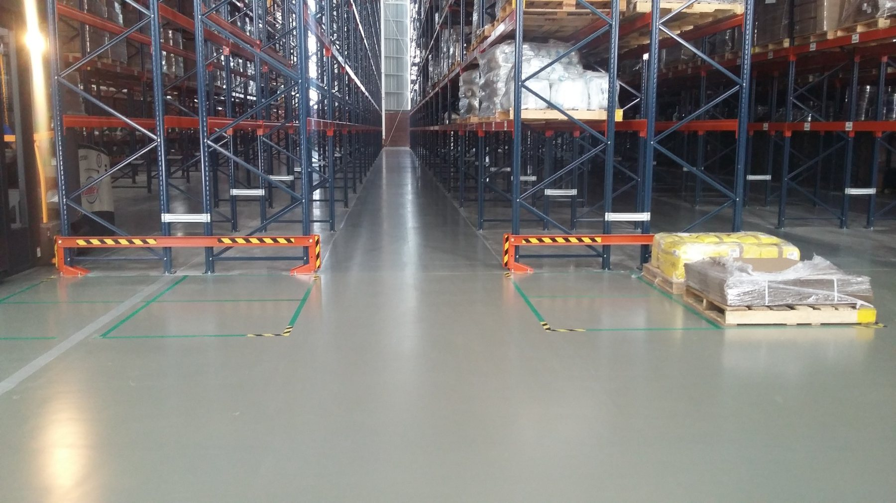
Poliurea, pisos industriales y soluciones de alto desempeño para tráfico pesado, ambientes sanitarios y procesos de alta exigencia.
No todos los pisos industriales fallan por el mismo motivo. PPC especifica sistemas según sustrato, tráfico, humedad, temperatura, exposición química y tiempo disponible de paro.
Impermeabilización y protección continua sin juntas, con curado ultrarrápido y alta resistencia para cubiertas, contenciones y áreas industriales.
Uretano-cemento, epóxicos de alto espesor, Novolac y sistemas sanitarios para plantas alimenticias, farmacéuticas, logísticas y químicas.
Soluciones para estacionamientos, rampas, andenes, montacargas y zonas de tránsito continuo con alta exigencia mecánica.
Soluciones para impermeabilización, contención y protección industrial. La poliurea permite crear una membrana continua de alto desempeño para superficies expuestas a agua, químicos y operación exigente.
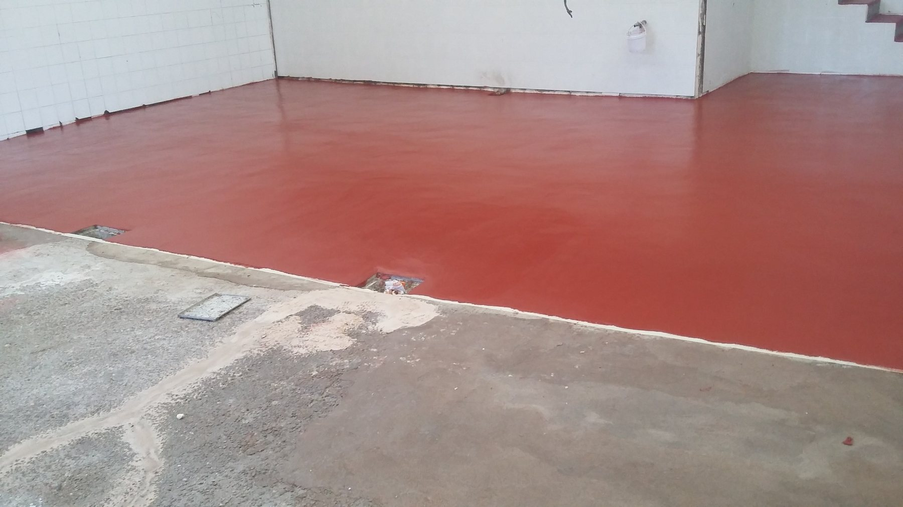
Sistemas para plantas que requieren limpieza, durabilidad, resistencia al tránsito y desempeño frente a químicos, humedad o temperatura.
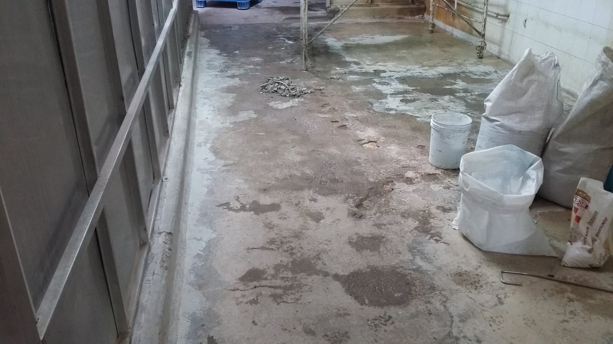
Deterioro, humedad, desgaste y contaminación visual.
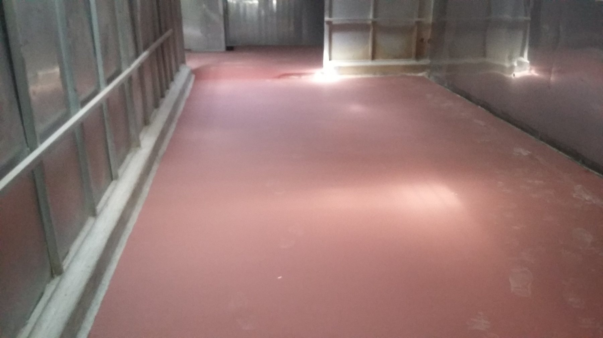
Superficie continua, limpia y lista para operación.
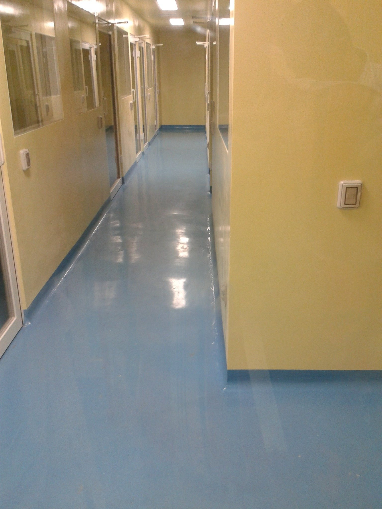
Áreas limpias, laboratorios y procesos controlados.
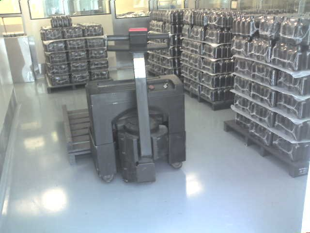
Montacargas, racks, producción y tránsito continuo.
Soluciones para superficies sometidas a abrasión, tráfico vehicular, exposición exterior y desgaste operativo. Ideales para estacionamientos, rampas, plazas, andenes y zonas comerciales de alto movimiento.
Proyectos en industria alimenticia, logística, farmacéutica y espacios comerciales de alto tráfico. Referencias disponibles bajo solicitud.
Pisos de alto desempeño para operación con racks, carga y tránsito constante.
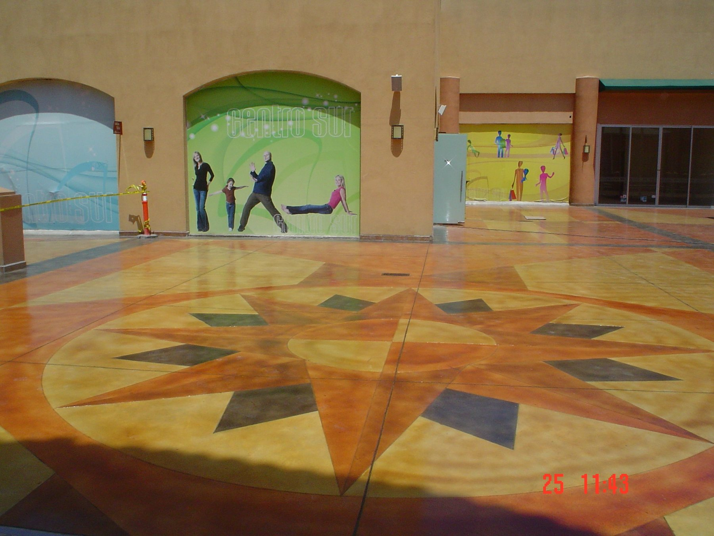
Acabados decorativos para espacios comerciales de alto tráfico peatonal.
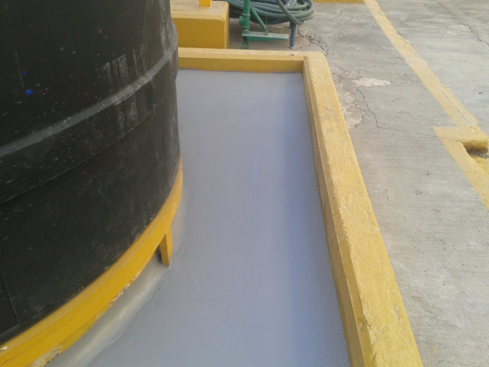
Superficies continuas para ambientes de limpieza exigente.
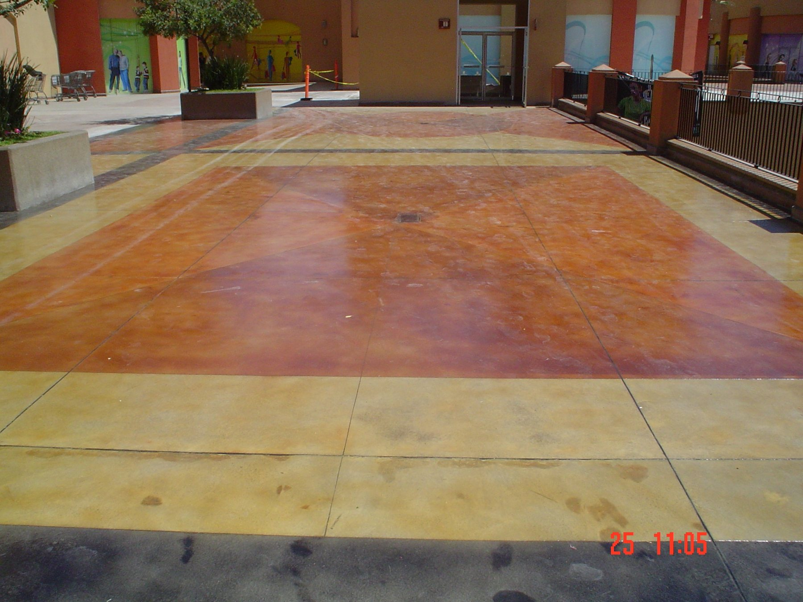
Resistencia y estética para áreas peatonales.
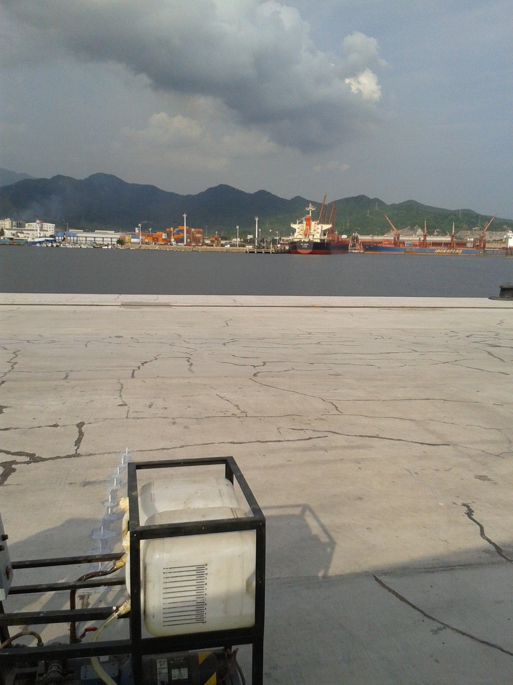
Sistemas para cubiertas, plataformas y exposición exterior.
Fijación de losas, reparación de grietas, inyección y tratamiento de juntas para extender la vida útil del concreto y reducir tiempos de paro.
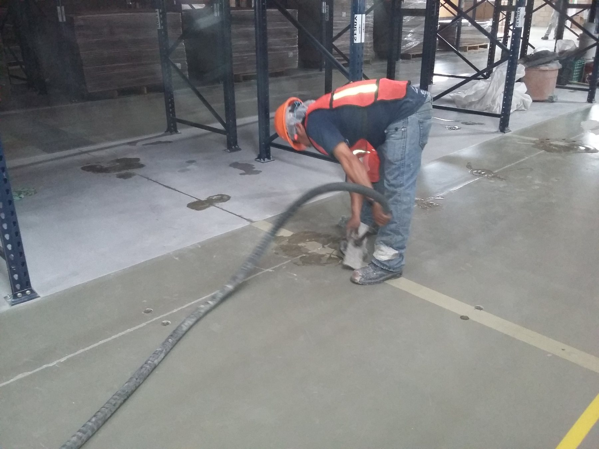
La preparación de superficie y la especificación técnica definen gran parte del desempeño. PPC trabaja desde diagnóstico hasta entrega.
Visita técnica, uso, tráfico, humedad, temperatura y exposición química.
Condición del sustrato, fallas, grietas, juntas y riesgos operativos.
Selección de poliurea, Ucrete, epóxico, Novolac o traffic.
Shot blast, escarificado, desbaste, limpieza y tratamiento previo.
Equipo técnico, control de espesor y ejecución por etapas.
Revisión final, recomendaciones y garantía por escrito.
Evaluamos su operación y recomendamos el sistema adecuado según tráfico, exposición química, humedad, temperatura y tiempo disponible de paro.
Enviar WhatsAppLic. Francisco Quintero
Representante Técnico — Comercial
WhatsApp: 331 044 8860
Gobernador Curiel 2582, Zona Industrial, Guadalajara, Jal.
Tel. (33) 3145-0066
rafael.quintero@proteccionconfiablegdl.com.mx